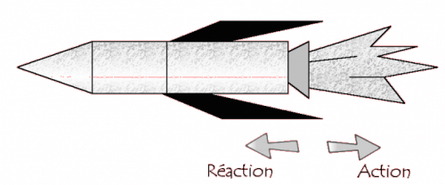
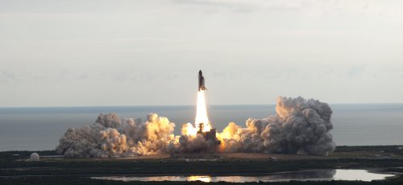
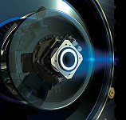
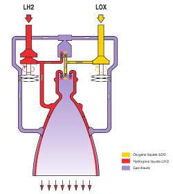

Depuis des décennies, l’Homme
essaie d’aller dans l’espace. Il s’est vite rendu compte qu’il avait besoin
de propulsion. En plus de s’envoler, il faut réussir s’arracher de
l’attraction terrestre. Lors du décollage d’Ariane 5 Ariane 5  Ariane 5 est le lanceur le plus rentable de l’Histoire, il est aujourd’hui encore utilisé par l’ESA. ,
la fusée pousse 20 fois plus qu’un avion de ligne.
Ariane 5 est le lanceur le plus rentable de l’Histoire, il est aujourd’hui encore utilisé par l’ESA. ,
la fusée pousse 20 fois plus qu’un avion de ligne.
Comment s’arracher de la Terre ?
La propulsion est le fait de mettre en mouvement un corps par le biais d’une force de poussée [1].
A partir de cette définition, on en déduit que se propulser nécessite l’application d’une force. Pour une fusée, c’est le réacteur qui va exercer une force très importante vers le bas pour décoller.
La première, deuxième et troisième loi de Newton s’appliquent alors. Voici leur énoncé :
- Première loi de Newton : « Tout corps persévère dans l’état de repos ou de mouvement uniforme en ligne droite dans lequel il se trouve, à moins que quelque force n’agisse sur lui, et ne le contraigne à changer d’état ».
- Deuxième loi de Newton : « Les changements qui arrivent dans le mouvement sont proportionnels à la force motrice, et se font dans la ligne dans laquelle cette force a été imprimée », c’est à dire :
- Troisième loi de Newton : « L’action est toujours égale à la réaction ; c’est-à-dire que les actions de deux corps l’un sur l’autre sont toujours égales, et dans des directions contraires ».
Lorsque le moteur de la fusée est en marche, la fusée exerce une action sur le sol. D’après la troisième loi de Newton on déduit que cela produit une réaction qui fait décoller la fusée [2].
- 
- Principe de l’action et de la réaction
- Extrait de Planète-Sciences
Les différents types de propulsion
- 
- Décollage de la navette Endeavour
- ©NASA 2011 (Jim Grossmann)
Afin d’exercer une force suffisamment conséquente pour décoller, il faut avoir une certaine puissance. Il existe donc plusieurs moyens de propulsion permettant de produire cette puissance.
Aujourd’hui, le plus utilisé est le moteur à propulsion liquide (en 2011), bien qu’il soit relativement complexe à utiliser.
Cependant lors du décollage, des EAP EAP EAP signifie "étages d’accélération à poudre". Ces étages contiennent de la poudre ainsi que des réacteurs d’appoint pour le décollage d’une fusée. Ces réacteurs sont situés le plus souvent sur le côté de la fusée. sont le plus souvent mis en marche pour aider les réacteur principal. Ils se détachent ensuite au bout de deux minutes, soit à une hauteur moyenne de 64km.
La propulsion chimique
| Propulsion | Exemples | Forme du carburant | Avantage | Inconvénients |
|---|---|---|---|---|
| À poudre | Ariane 5 (les propulseurs) | Poudre | Facile à mettre en place, stabilité de combustion | Ne peut pas être éteint, performances moyennes |
| À liquide | Ariane 5 (moteur-fusée) | Liquide (combustible + carburant) | Souplesse d’utilisation (réservoir remplit avant le décollage et réglable en permanence) | Requiert de la haute technologie |
La propulsion électrique
À l’heure actuelle, dans le cas de la propulsion électrique, la poussée est créée par un gaz chargé d’ions qui est accéléré par un champ électromagnétique. La poussée est notablement plus faible que les propulsions chimiques mais les rendements restent supérieurs. Les quantités de carburant et d’énergie consommées sont en effet bien inférieures et l’autonomie est beaucoup plus grande.
| Propulsion | Exemple | Forme du carburant | Avantage | Inconvénients |
|---|---|---|---|---|
| Ionique | SMART-1 SMART-1 SMART-1 est une sonde propulsée au moyen d’un moteur ionique. Elle sertde preuve technologique pour démontrer la possibilité de fabriquer des sondes moins coûteuses.  Cette sonde est resté 5000h en fonctionnement en consommant seulement 60l de xénon pour aller de l’orbite de la Terre jusqu’à la Lune. [4] |
Atome de Xénon | Autonomie (5000h pour 80kg de Xénon) | Poussée très faible. Seulement pour les satellites |
La propulsion cryotechnique
La propulsion cryotechnique
utilise l’hydrogène comme carburant, et de l’oxygène liquide comme
comburant. Cette propulsion est très complexe car elle est soumise à des contraintes
très difficiles (on passe de -253°C à 3 500°C) sans être lourde.
Le moteur d’Ariane 5
Le moteur-fusée principal d’une fusée est un des éléments les plus complexe d’un lanceur. Le moteur-fusée d’Ariane 5 se nomme Vulcain 2 et a été développé par le SNECMA. Vulcain consomme de l’hydrogène et de l’oxygène liquides. C’est un moteur à propulsion cryotechnique.

Chaque seconde, 265 kg d’ergols sont injectés dans la chambre de combustion par deux turbopompes indépendantes. Vulcain 2 développe une poussée de 880 kN au sol et de 1140 kN dans le vide. Il fonctionne neuf minutes et demi lors d’un décollage.
Et dans le futur ?
Les propulsions futures à l’étude sont [5] :
- La propulsion nucléo-thermique : cette technologie a 50 ans mais elle reste trop contraignante.
- La propulsion nucléo-électrique : on utilise une mini centrale nucléaire associé à des propulseurs électrique. Cette technologie a pour le moment une poussé trop faible.
- La propulsion solaire : le concept est simple, on concentre les rayons du soleil pour chauffer un fluide et l’accélérer. Le problème reste de concentrer les rayons avec précision.
- La propulsion électrique : pour le moment peu utilisée, de nouvelles technologies sont en développement dans la plupart des agences spatiales.